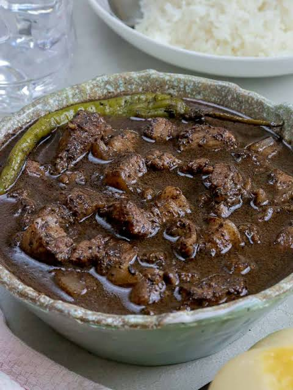

Back to Home
Dinuguan Recipe

Description
Dinuguan is a classic Filipino savory stew made of pork belly simmered in a rich, deeply seasoned dark gravy of pig's blood,
vinegar, garlic, and long green chili peppers (siling haba). Often affectionately nicknamed "chocolate meat" for newcomers,
the dish has a velvety texture and an addictively tangy, savory profile.
It is iconic for being served alongside soft, steamed rice cakes called "puto" for merienda (afternoon snack) or with hot steamed white rice for dinner.
Ingredients
- 750g pork belly or pork shoulder, cut into small bite-sized cubes
- 2 cups pork blood (fresh or thawed), strained
- 1/2 cup cane vinegar
- 1 cup water or pork stock
- 6 cloves garlic, minced
- 1 medium onion, finely diced
- 1 thumb-sized ginger, julienned
- 3 pieces long green chilies (siling haba)
- 2 dried bay leaves
- 1 tablespoon fish sauce (patis)
- 2 tablespoons cooking oil
- Salt and black pepper to taste
Steps
- Heat cooking oil in a large pot over medium heat. Sauté garlic, ginger, and onions until aromatic.
- Add the cubed pork belly and cook until browned on all sides.
- Season with fish sauce, black pepper, and add the dried bay leaves.
- Pour in the cane vinegar and water. Bring to a boil uncovered and undisturbed for 5 minutes to let the vinegar mellow.
- Reduce the heat, cover, and simmer for 25 to 30 minutes until the pork is tender.
- Slowly pour in the strained pork blood while stirring constantly to avoid curdling and lumps.
- Add the long green chili peppers and simmer on low heat for another 10 to 15 minutes until the stew thickens into a rich, glossy dark sauce.
- Season with salt to taste and serve piping hot with puto or steamed rice.